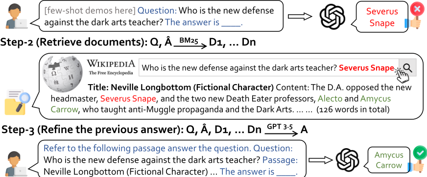
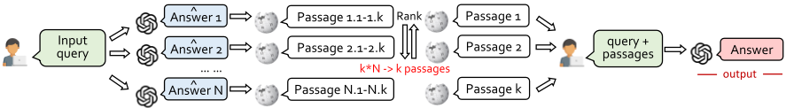
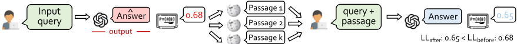
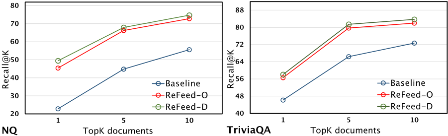

通过即插即用检索反馈改进语言模型（REFEED）
LLM 在知识密集型任务上易产生幻觉，参数化知识可能不完整或过时，而基于人类反馈的微调成本高且无法在推理时介入。论文提出 REFEED：先让 LLM 生成初始答案，再以'问题+初始答案'作为检索 query 从 Wikipedia 等大规模文档集合取回 top-10 文档，最后把检索结果并入 in-context 提示让模型修正原答案，全程即插即用、无需微调。另引入两个增强模块：用 nucleus sampling 生成多个候选答案以扩大检索覆盖，并用平均负对数似然在'检索前/后答案'之间做集成，抵御误导性文档。在 NQ、TriviaQA、HotpotQA、WoW 四个知识密集型基准上，zero-shot 较无检索反馈基线提升 +6.0%、few-shot 提升 +2.5%，对 text-davinci-003 的 EM 提升达 +7.7，并可无缝结合 CoT 处理多跳问答。对团队而言，这是一套低成本、可组合的'生成-检索-修正'RAG 增强范式。
LLM 在复杂推理与知识密集型任务上易生成幻觉内容，参数中的知识可能不完整或过时，且难以覆盖长尾知识；基于人类反馈的改进方式（如 RLHF）依赖大量人工标注、微调成本高昂，且无法在推理阶段提供实时反馈纠错；传统 retrieve-then-read 流水线在问题与支持文档缺乏词面或语义重叠时难以检索到关键证据。
REFEED 三步流水线：(1) 用 LLM（实验用 Codex/text-davinci-003）以 greedy decoding 生成初始答案；(2) 以 [query, 初始答案] 作为检索 query，用检索模型（如 BM25）从 Wikipedia 等文档集合检索 top-10 文档；(3) 将检索文档作为 in-context 证据让模型细化初始答案（改写、扩展或更改）。增强模块一：多样化答案生成——用 nucleus sampling 采样 n 个候选答案分别检索，按相似度合并去重后取 top-k；增强模块二：集成——用平均负对数似然比较检索前后的答案，保留 log-likelihood 更高者，缓解检索文档误导。方法还可与 CoT 结合：先生成推理链与答案，检索反馈后重新生成 CoT 修正回答。
zero-shot 设置下较无检索反馈的基线提升 +6.0%，few-shot 设置下提升 +2.5%（四个知识密集型基准）
以 text-davinci-003 为骨干时，在两个开放域 QA 基准上 EM 较原始模型提升 +7.7，并在三个 zero-shot 与三个 few-shot 知识密集型任务上达到 SoTA
消融实验：去掉集成方法，三个 QA 数据集平均下降 0.8 EM；去掉多样化生成，平均下降 1.1 EM
多样化采样提升检索文档的 answer hit ratio（Recall@K），与 self-consistency 的发现一致
与 CoT 结合在 HotpotQA 多跳推理上较直接 QA 提示有显著提升（正文未给出具体数值）
与 retrieve-then-read（如 RePLUG）不同，REFEED 在生成初始答案之后检索，以'问题+答案'为 query，使检索直接针对已生成输出提供反馈，能命中与问题缺乏词面重叠但与答案相关的文档；与 RLHF 类方法不同，无需微调、即插即用且可在推理时介入。与同期工作相比：He et al. (2023) 的检索反馈局限于常识推理任务，Peng et al. (2023) 需用 ChatGPT 生成反馈，而 REFEED 直接以检索文档作为反馈，并新增多样化生成与基于困惑度的集成两个模块。
相关度级别：high
命中能力域：3.1 上下文工程与记忆 | 3.2 提示工程 | 3.5 评测与可靠使用
理由：直接命中 3.1（RAG/检索增强、结构化上下文组织）与 3.2（in-context 提示技术）：'生成-检索-修正'的反馈回路、把检索文档组织进 in-context 提示、以及基于 log-likelihood 的前后答案集成，都是团队构建知识库问答与研发提效工具时可直接复用的上下文工程手段，且完全符合团队'用好模型而非训练模型'的定位。论文对检索反馈可靠性的分析（误导案例与集成缓解）与 R@K 中间评测指标也契合 3.5 的可靠使用与评测关注。
建议动作：作为方法参考存档
arXiv:2305.14002v1 [cs.CL] 2023年5月23日
通过即插即用检索反馈改进语言模型
Wenhao Yu ♣, Zhihan Zhang ♣, Zhenwen Liang ♣, ♣ ♠
Meng Jiang, Ashish Sabharwal
♣ 圣母大学（University of Notre Dame）；♠ 艾伦人工智能研究所（Allen Institute for Artificial Intelligence）
♣ wyu1@nd.edu; ♠
大语言模型（Large Language Models, LLMs）在各种自然语言处理（NLP）任务中展现出卓越的性能。然而，它们常常生成错误或幻觉信息，这阻碍了其在真实场景中的实际应用。已有研究表明，人类反馈能够有效提升生成内容的事实性与质量，从而解决其中部分局限。然而，这种方法资源消耗大，需要人工输入和监督，可能既耗时又昂贵。此外，人类反馈无法在推理阶段提供，这进一步限制了其在动态交互式应用中的实用价值。在本文中，我们提出了 REFEED，这是一种新颖的流水线，旨在通过即插即用框架提供自动检索反馈来增强 LLM，而无需昂贵的微调。REFEED 首先生成初始输出，然后利用检索模型从大规模文档集合中获取相关信息，最后将检索到的信息融入上下文示例（in-context demonstration）中以优化输出，从而以更高效、更具成本效益的方式解决 LLM 的局限性。在四个知识密集型基准测试（benchmark）数据集上的实验表明，与不使用检索反馈的基线相比，我们提出的 REFEED 在零样本（zero-shot）设置下可提升超过 +6.0%，在少样本（few-shot）设置下可提升 +2.5%。
大语言模型（LLM）在各种自然语言处理（NLP）任务中展现出卓越的性能，它们利用上下文学习（in-context learning），从而无需进行任务特定的微调（Brown et al., 2020; Chowdhery et al., 2022; OpenAI, 2023）。此类模型通常在海量数据集上进行训练，在其参数中捕获了丰富的世界知识或领域特定知识。
尽管取得了这些成就，LLM 仍表现出某些不足，尤其是在面对
ashishs@allenai.org
复杂推理和知识密集型任务时（Zhang et al., 2023; Yu et al., 2023）。一个显著的缺点是它们倾向于产生幻觉内容，生成缺乏世界知识依据的信息，导致输出不可信，且提供准确信息的能力下降（Yu et al., 2022b; Manakul et al., 2023; Alkaissi and McFarlane, 2023）。LLM 的另一个局限在于其所存储知识的质量和范围。由于预训练语料库中信息源的可靠性问题，LLM 中嵌入的知识可能不完整或过时（Lazaridou et al., 2022; Shi et al., 2023）。信息领域的浩瀚加剧了这一问题，使模型难以保持对世界事实全面而最新的理解。此外，LLM 无法“记住”所有世界信息，尤其难以应对训练语料库中长尾部分的知识（Mallen et al., 2022; Kandpal et al., 2022）。这种固有的局限迫使它们在存储和检索多样化且罕见的知识与专注于更常遇到的信息之间进行权衡，从而在处理与较少见主题相关或需要细致理解的问题时可能出现不准确。
现有的提升语言模型事实性的方法包括基于人类反馈调整模型输出，随后进行基于强化学习的微调（Nakano et al., 2021; Campos and Shern, 2022; Ouyang et al., 2022; Liu et al., 2023）。尽管这种方法模拟了人与人之间的任务学习环境，但由于 LLM 规模的指数级增长以及标注者需要提供大量反馈，微调 LLM 的成本可能极其高昂。过度依赖获得正面评价的数据可能会限制模型识别和纠正负面属性或错误的能力，进而可能阻碍其向未见数据和新场景泛化的能力。此外，LLM 一旦完成微调，便无法在推理过程中接收实时反馈，也无法实现即时纠错。
在本文中，我们旨在以即插即用（plug-and-play）的方式提供自动反馈，而无需对大语言模型（LLM）进行微调。我们探讨了两个主要的研究问题：第一，我们能否在不依赖人工标注者的情况下，采用检索方法对单个生成的输出提供反馈？第二，我们能否以即插即用的方式整合反馈以改进先前的输出，从而避免代价高昂的语言模型微调？针对所提出的这两个问题，我们提出了一种新颖的流水线（pipeline），通过自动检索反馈在即插即用框架中改进语言模型推理，命名为 REFEED。具体而言，语言模型首先生成初始输出，随后由检索模型将原始查询和生成的输出作为新的查询，从 Wikipedia 等大型文档集合中检索相关信息。检索到的信息使语言模型能够重新审视生成的输出并对其进行改进，可能产生一个新的输出（如果没有做出任何更改，输出也可能保持不变）。
值得注意的是，与先检索后阅读（retrieve-then-read）方法（Lewis et al., 2020; Lazaridou et al., 2022; Shi et al., 2023）相比，我们的方法受益于从语料库中检索到的更相关的文档，能够直接阐明查询与输出之间的关系。此外，若不生成初始输出，由于支持文档与问题之间缺乏词汇或语义上的重叠，这些文档将难以被检索到。我们将在相关工作与实验部分更详细地讨论这一比较。
为了进一步增强我们提出的 REFEED 流水线，我们在该框架中引入了两个创新模块。首先，我们将初始生成步骤多样化以产生多个输出候选，使模型能够通过分析多样化的检索文档集合来确定最可靠的答案。其次，我们采用一种集成（ensemble）方法，利用困惑度（perplexity）排序方法合并检索反馈前后的语言模型输出，因为检索反馈偶尔可能会误导语言模型（详情参见图 5 中的案例研究）。
总体而言，我们的主要贡献可以总结如下：
1. 我们提出了一种利用检索反馈的新颖流水线，命名为 REFEED，以即插即用的方式改进大语言模型。
解决知识密集型自然语言处理（NLP）任务的主流方法采用“先检索后阅读”（retrieve-then-read）的模型流水线。给定一个输入查询，系统会使用检索器（retriever）在大型证据语料库（例如维基百科）中搜索可能包含答案的相关文档。随后，再使用阅读器（reader）仔细审查检索到的文档并预测答案。近期的研究主要集中于改进检索器（Karpukhin et al., 2020; Qu et al., 2021; Sachan et al., 2022）或阅读器（Izacard and Grave, 2021; Yu et al., 2022a; Ju et al., 2022），或者对整个系统进行端到端训练（Singh et al., 2021; Shi et al., 2023）。早期的检索方法大多采用稀疏检索器，例如 BM25（Chen et al., 2017）。最近，ORQA（Lee et al., 2019）和 DPR（Karpukhin et al., 2020）通过使用密集的上下文化向量进行文档索引，彻底改变了该领域，其性能优于传统方法。近来，一些工作提出用大语言模型替代检索模型来充当检索器，这得益于其强大的知识记忆能力（Yu et al., 2023; Sun et al., 2023）。然而，这些方法仍然容易出现幻觉问题，并且无法获取最新信息。值得注意的是，与 RePLUG（Shi et al., 2023）等先检索后阅读流水线相比，我们的方法受益于从语料库中检索到的更多相关文档，这些文档能够直接阐明查询与输出之间的关系。此外，在不生成初始输出的情况下，由于与问题缺乏词汇或语义上的重叠，支持输出的文本将难以被轻易识别。
人类反馈在评估语言模型性能、解决准确性、公平性和偏见问题方面发挥着至关重要的作用，并为模型改进提供洞见，使其更好地符合人类期望。认识到将人类反馈融入语言模型的重要性，研究人员已经开发并测试了各种人在回路（human-in-the-loop）方法（Nakano et al., 2021; Campos and Shern, 2022; Ouyang et al., 2022; Liu et al., 2023; Scheurer et al., 2023）。InstructGPT (Ouyang et al., 2022) 是该领域的先驱，它利用基于人类反馈的强化学习（RLHF）对 GPT-3 进行微调，使其遵循各种书面指令。该方法在一个数据集上训练了奖励模型（RM），以根据人类标注者的偏好预测更受青睐的模型输出。随后，RM 被用作奖励函数，并使用 PPO 算法对监督学习基线进行微调，以最大化该奖励。Liu et al. (2023) 提出将所有形式的反馈转换为句子，随后用这些句子对模型进行微调。该方法利用了语言模型的语言理解能力。
尽管这些方法在提升语言模型在特定任务上的性能方面已展现出可喜的成果，但它们也存在若干显著的局限性。这些方法依赖人工标注数据和获得正面评价的模型生成结果来微调预训练语言模型，这可能涉及相当可观的成本和时间投入。此外，由于仅依赖正面评价的数据，模型识别和处理负面属性或错误的能力可能受到限制，从而降低其对新颖和未见数据的泛化能力。
鉴于该领域的快速发展，许多同期工作采用了类似的理念，利用自动化反馈来提升语言模型性能（He et al., 2023; Peng et al., 2023）。尽管这些研究共同验证了引入检索反馈的有效性与实用性，但必须强调我们的工作与这些同期研究之间的差异。He et al. (2023) 最初证明了检索反馈可以增强思维链（chain-of-thought, CoT）推理的忠实性。然而，他们的研究仅限于常识推理任务，且所观察到的性能提升并不显著。相比之下，我们的工作主要针对知识密集型自然语言处理（NLP）任务，在这类任务中，外部证据在提供有价值的反馈以增强模型性能方面发挥着更为关键的作用。Peng et al. (2023) 提出利用 ChatGPT 基于检索到的证据生成反馈。相比之下，我们的研究表明，检索到的文档可以直接用作反馈来改进语言模型的输出，从而显著提升了该方法的效率。同时，在基本的检索反馈概念之上，我们引入了两个新颖的模块，即多样化生成输出以及集成初始答案与反馈后答案。与现有研究相比，我们提出的 REFEED 方法为这一持续进行的讨论提供了独特的贡献。随着我们坚持探索这一研究方向，我们预见未来的研究将不断完善这些技术，最终取得更大的性能提升。
在本节中，我们深入描述我们创新的即插即用检索反馈（REFEED）流水线，该流水线专为应对各类知识密集型任务而设计（§ 3.1）。该流水线的运行方式是：首先提示语言模型（例如 InstructGPT）针对给定查询生成一个答案，随后从诸如 Wikipedia 之类的大规模文档集合中检索文档。接着，流水线通过整合从检索到的文档中获取的信息来精炼初始答案。
此外，我们基于 REFEED 框架引入了两个新颖的模块。第一个模块旨在使初始生成步骤多样化，产生多个输出候选。这使模型能够通过检视检索到的广泛文档来识别最可靠的答案。第二个模块采用集成方法，将检索反馈过程之前和之后的语言模型输出结合起来。这是通过一种困惑度排序方法实现的，该方法降低了检索反馈在无意中误导语言模型的风险。
背景。传统的大型语言模型，例如基于 GPT-3.5 的架构，主要专注于对输入查询进行编码并预测相应的输出答案（Brown et al., 2020; Ouyang et al., 2022）。在此

程中，问题 q 与文本提示组合后作为模型的输入，模型随后生成答案。这可以表示为 p ( a | q, θ )，其中 θ 表示预训练模型参数。在实际场景中，最大后验估计（MAP）作为最终答案，如 ˆ a = argmax a p ( a | q, θ ) 所示。然而，这种从大型语言模型中引出答案的直接方法往往会导致次优性能，这是因为它未能充分利用模型可获得的丰富补充性世界知识（Levine et al., 2022）。为了解决这一局限性，近期研究探索了通过引入一个额外的辅助变量（对应于检索到的文档 ( d )）来提升模型性能的方法。这一扩展将模型公式修改为 p ( a | q ) = ∑ i p ( a | d i , q ) p ( d i | q )，并对所有可能的文档进行边缘化。在实践中，由于潜在来源数量庞大，对所有可能的文档 ( d ) 计算求和是不可行的。因此，最常见的方法是使用排名最高的 k 个文档来近似对 d 的求和，并将所有这些文档作为输入的一部分提供。不失一般性（w.l.o.g.），我们假设这些文档为 d 1 , . . . , d k，从而得到 p ( a | q ) = ∑ k i =1 p ( a | d i , q ) p ( d i | q )。这种技术被称为先检索后阅读（retrieve-then-read）流水线（Lazaridou et al., 2022; Shi et al., 2023）。
与上文提到的传统方法不同，REFEED 旨在通过检索提供专门针对单个生成输出的反馈。它可以表述为 p ( a | q ) = ∑ i p ( a | d i , q, ̂ a ) p ( d i | ̂ a , q ) p ( ̂ a | q )，其中 ̂ a 表示初始输出，a 是最终输出，而 d i 不仅以 q 为条件，还以 ̂ a 为条件。因此，d i 旨在专门针对作为输出的 ̂ a 提供反馈，而不是为查询 q 提供一般性信息。与检索并阅读（retrieve-and-read）流水线的情况一样，我们仅保留排名最高的前 k = 10 篇文档：p ( a | q ) = ∑ k i =1 p ( a | d i , q, ̂ a ) p ( d i | ̂ a , q ) p ( ̂ a | q )。
该方法能够以即插即用（plug-and-play）的方式平滑地整合反馈以改进先前的输出，从而免去了代价高昂的微调。REFEED 利用了从大规模文本语料库中检索到的相关文档集合，有助于直接阐明查询与输出之间的关系。此外，若不生成初始输出，由于与问题之间缺乏词汇或语义上的重叠，将难以检索到支持该输出的文本。本质上，REFEED 的运作方式是：首先提示大语言模型针对给定查询生成一个答案，然后从外部来源检索文档。随后，该流水线通过整合从检索到的文档中获取的信息来改进初始答案。这一三步流程如图 1 所示，并在下文中概述。
步骤 1：生成初始答案。在这一初始步骤中，我们的主要目标是提示语言模型根据给定的问题生成一个答案。为实现这一目标，可以采用多种解码策略，例如贪婪解码（greedy decoding）和采样方法。在我们的实验中，我们选择了贪婪解码，因为它简单且具有可复现性，能够在多次运行中带来更一致的性能。这一步骤对于奠定基础至关重要，后续步骤将在此基础上构建并改进初始答案。


步骤 2：检索支持文档。我们流水线的第二步是利用检索模型（例如 BM25）从大规模文档集合（如 Wikipedia）中获取一组文档。在我们的实验中，我们检索前 10 篇文档，这在步骤 3 推理的计算效率与纳入足够信息之间提供了均衡的折中。这一步骤的主要目标是识别能够证实或反驳问题与初始生成答案之间关系的相关信息。通过从这些海量来源中提取相关信息，该流水线能够有效利用外部知识来提高所生成回答的准确性和可靠性。
步骤3：精炼先前的答案。我们流水线的最后一步着重于在考虑步骤2中检索到的文档的基础上，对先前生成的答案进行精炼。在这一阶段，语言模型会评估检索到的信息，并相应地调整初始答案，以确保响应更加准确。这一精炼过程可能涉及基于新获得的知识对答案进行改写、扩展，甚至更改。通过融入从检索到的文档中获取的洞见，精炼后的答案能够更全面、更准确地回应初始查询，从而带来整体性能的提升。这一步骤对于弥合初始生成与丰富外部知识之间的差距至关重要，最终产生高质量、信息充分的输出。
多样化答案生成。答案生成的多样性在我们 REFEED 流水线的第一步中发挥着关键作用。我们并非仅仅生成概率最高的单个答案，而是采用采样方法来产生一组潜在答案。这种方法促进了生成输出的多样性，并使得基于多样化答案的检索反馈更加全面。由此，最终产生的响应更加精炼、准确，能够有效地回应所提出的问题。
具体而言，我们将问题 q 连同一段文本提示输入模型，模型随后采样出多个不同的答案，记为 p ( a j | q, θ ) 。接着，我们将生成的 n 个答案用作检索过程的输入查询，即 [ q, a 1 ] , · · · , [ q, a n ] 。该阶段通过多次解码来实现，其中输入查询以核采样（nucleus sampling）方式馈入语言模型。这一策略提高了获得更加多样化的检索文档集合的概率，这些文档涵盖了更广泛的相关信息。形式上，这可以表示为 p ( a | q ) = ∑ i,j p ( a | d i,j , q, ̂ a j ) p ( d i,j | ̂ a j , q ) p ( ̂ a j | q ) 。
考虑到 STEP 3 中所能采用的文档数量（或者说语言模型输入的上下文长度）存在限制，我们将所有检索到的文档（跨越不同的 ̂ a j ）合并在一起，依据查询-文档相似度得分对其进行排序，并仅保留 topk 个文档用于后续处理。在我们的实验中，我们取 k = 10 ，这在计算效率与纳入多样化信息之间提供了均衡的折中。此外，考虑到不同查询可能检索到相同文档的情况，我们执行去重操作，以确保检索到的文档集合保持多样且相关。最后，在计算最终答案时，我们将全部 n 个生成的答案以及前述 topk 个文档一并作为提示的一部分提供。形式上，这可以表示为 通过在 STEP 1 中融入答案生成的多样性，我们有效地拓宽了潜在答案空间，促进了对更加多样的可能解的探索。 p ( a | q ) = ∑ k i =1 ∑ n j =1 p ( a | d i,j , q, ̂ a j ) p ( d i,j | ̂ a j , q ) p ( ̂ a j | q ) 。
初始答案与反馈后答案的集成。检索反馈是获取相关信息以验证初始生成答案准确性的关键组成部分。尽管如此，在某些情况下，检索到的文档可能会在无意中误导语言模型，致使原本正确的答案被修改为错误的答案（示例见图 5）。为应对这一挑战，我们引入了一种集成（ensemble）技术，同时考虑初始答案与检索反馈后修订的答案，最终提升整体生成性能。
在集成（ensemble）过程中，我们利用平均负对数似然（average negative log-likelihood）对生成的答案在融入检索文档之前（即 LL before ( a | q ) = 1 t ∑ t i =1 p ( x i | x <i , q ) ）和之后（即 LL after ( a | q ) = 1 t ∑ t i =1 p ( x i | x <i , q, ̂ a, d ) ）分别进行排序。如果某个答案在检索反馈之前的对数似然高于检索反馈之后的对数似然，我们保留最初生成的答案；另一方面，如果检索反馈之后的对数似然更低，我们则选择精炼后的答案。这一策略使得我们能够对检索反馈前后答案的可信度进行更有依据的评估，从而确保最终响应更加准确。
在本节中，我们在三个知识密集型自然语言处理（NLP）任务上开展了全面的实验，包括单跳问答（single-hop QA，即 NQ (Kwiatkowski et al., 2019)、TriviaQA (Joshi et al., 2017)）、多跳问答（multi-hop QA，即 HotpotQA (Yang et al., 2018)）以及对话系统（即 WoW (Dinan et al., 2019)）。在单跳问答数据集上，我们采用与先前方法（Karpukhin et al., 2020; Izacard and Grave, 2021）相同的数据划分。对于 HotpotQA 和 WoW 数据集，我们的方法则使用 KILT 挑战赛（Petroni et al., 2021）提供的数据集划分。
为了全面评估我们模型的性能，我们采用了多种评估指标，并充分考虑该领域已确立的专业标准。在开放域问答的评估中，我们使用精确匹配（exact match, EM）和 F1 分数来评估模型性能（Zhu et al., 2021）。对于 EM 分数而言，若某个答案的规范化形式——该形式通过 (Karpukhin et al., 2020) 所描述的规范化流程获得——与所提供列表中的任一可接受答案相匹配，则该答案被视为正确。与 EM 分数类似，F1 分数将预测结果和真实答案视为词袋（bags of tokens），并计算预测与真实答案之间的平均重叠程度。此外，我们还将 Recall@K（R@K）作为中间评估指标纳入其中，其计算方式为前 K 篇检索或生成的文档中包含正确答案的百分比。该指标已在先前研究中被广泛采用（Karpukhin et al., 2020; Sachan et al., 2022; Yu et al., 2023），从而确立了其在该领域的可信度。在评估开放域对话系统时，我们遵循 KILT 基准测试（benchmark）(Petroni et al., 2021) 所制定的准则，该准则建议将 F1 与 Rouge-L（R-L）分数相结合作为评估指标。这一方法确保了对我们模型性能进行全面而严格的评估，符合专业标准和最佳实践。
Codex：OpenAI Codex，即 code-davinci-002，是 GPT-3 模型的一个精密后继版本，其利用海量数据进行了广泛训练。这些数据不仅包含自然语言，还包含从 GitHub 等公开可访问的代码仓库中获取的数十亿行源代码。因此，Codex 模型在生成类人语言和理解多种编程语言方面拥有无与伦比的能力。
Text-davinci-003：在先前 InstructGPT 模型所奠定的基础之上，OpenAI 的 text-davinci-003 代表了该系列的一次重大进步。这一前沿模型在多个方面展现出显著进展，包括生成更高质量书面内容的能力、处理并执行复杂指令的增强能力，以及创作连贯长篇叙述的扩展能力。
| Models. | NQ.EM | NQ.F1 | TriviaQA.EM | TriviaQA.F1 | HotpotQA.EM | HotpotQA.F1 | WoW.F1 | WoW.R-L |
|---|---|---|---|---|---|---|---|---|
| *close book methods without using retriever | *close book methods without using retriever | *close book methods without using retriever | *close book methods without using retriever | *close book methods without using retriever | *close book methods without using retriever | *close book methods without using retriever | *close book methods without using retriever | *close book methods without using retriever |
| TD - 003 (Ouyang et al., 2022) | 29.9 | 35.4 | 65.8 | 73.2 | 26.0 | 28.2 | 14.2 | 13.3 |
| GenRead (Yu et al., 2023) | 32.5 | 42.0 | 66.2 | 73.9 | 36.4 | 39.9 | 14.7 | 13.5 |
| *open book methods with using retriever | *open book methods with using retriever | *open book methods with using retriever | *open book methods with using retriever | *open book methods with using retriever | *open book methods with using retriever | *open book methods with using retriever | *open book methods with using retriever | *open book methods with using retriever |
| Retrieve-then-Read | 31.7 | 41.2 | 61.4 | 67.4 | 35.2 | 38.0 | 14.6 | 13.4 |
| REFEED (Ours) | 39.6 | 48.0 | 68.9 | 75.2 | 41.5 | 45.1 | 15.1 | 14.0 |
| Models. | NQ.EM | NQ.F1 | TriviaQA.EM | TriviaQA.F1 | HotpotQA.EM | HotpotQA.F1 | WoW.F1 | WoW.R-L |
| Models. | NQ.EM | NQ.F1 | TriviaQA.EM | TriviaQA.F1 | HotpotQA.EM | HotpotQA.F1 | WoW.F1 | WoW.R-L |
|---|---|---|---|---|---|---|---|---|
| Backbone Language Model: Text - Davinci - 003 ( TD - 003 ) | Backbone Language Model: Text - Davinci - 003 ( TD - 003 ) | Backbone Language Model: Text - Davinci - 003 ( TD - 003 ) | Backbone Language Model: Text - Davinci - 003 ( TD - 003 ) | Backbone Language Model: Text - Davinci - 003 ( TD - 003 ) | Backbone Language Model: Text - Davinci - 003 ( TD - 003 ) | Backbone Language Model: Text - Davinci - 003 ( TD - 003 ) | Backbone Language Model: Text - Davinci - 003 ( TD - 003 ) | Backbone Language Model: Text - Davinci - 003 ( TD - 003 ) |
| *close book methods without using retriever | *close book methods without using retriever | *close book methods without using retriever | *close book methods without using retriever | *close book methods without using retriever | *close book methods without using retriever | *close book methods without using retriever | *close book methods without using retriever | *close book methods without using retriever |
| TD - 003 (Ouyang et al., 2022) | 36.5 | 46.3 | 71.2 | 76.5 | 31.2 | 37.5 | 14.1 | 13.3 |
| GenRead (Yu et al., 2023) | 38.2 | 47.3 | 71.4 | 76.8 | 36.6 | 47.5 | 14.7 | 14.1 |
| *open book methods with using retriever | *open book methods with using retriever | *open book methods with using retriever | *open book methods with using retriever | *open book methods with using retriever | *open book methods with using retriever | *open book methods with using retriever | *open book methods with using retriever | *open book methods with using retriever |
| Retrieve-then-Read | 34.3 | 45.6 | 66.5 | 70.6 | 35.2 | 46.8 | 14.5 | 13.8 |
| REFEED (Ours) | 40.1 | 50.0 | 71.8 | 77.2 | 41.5 | 54.2 | 15.1 | 14.3 |
| Backbone Language Model: Code - Davinci - 002 ( Codex ) | Backbone Language Model: Code - Davinci - 002 ( Codex ) | Backbone Language Model: Code - Davinci - 002 ( Codex ) | Backbone Language Model: Code - Davinci - 002 ( Codex ) | Backbone Language Model: Code - Davinci - 002 ( Codex ) | Backbone Language Model: Code - Davinci - 002 ( Codex ) | Backbone Language Model: Code - Davinci - 002 ( Codex ) | Backbone Language Model: Code - Davinci - 002 ( Codex ) | Backbone Language Model: Code - Davinci - 002 ( Codex ) |
| *close book methods without using retriever | *close book methods without using retriever | *close book methods without using retriever | *close book methods without using retriever | *close book methods without using retriever | *close book methods without using retriever | *close book methods without using retriever | *close book methods without using retriever | *close book methods without using retriever |
| Codex (Ouyang et al., 2022) | 41.6 | 52.8 | 73.3 | 79.2 | 32.5 | 42.8 | 16.9 | 14.7 |
| GenRead (Yu et al., 2023) | 44.2 | 55.2 | 73.7 | 79.6 | 37.5 | 48.8 | 17.2 | 15.1 |
| *open book methods with using retriever | *open book methods with using retriever | *open book methods with using retriever | *open book methods with using retriever | *open book methods with using retriever | *open book methods with using retriever | *open book methods with using retriever | *open book methods with using retriever | *open book methods with using retriever |
| Retrieve-then-Read | 43.9 | 54.9 | 75.5 | 81.7 | 41.5 | 53.7 | 17.0 | 14.9 |
| REFEED (Ours) | 46.4 | 57.0 | 76.6 | 82.7 | 43.5 | 56.5 | 17.6 | 15.5 |
| Models. | NQ.EM | NQ.F1 | TriviaQA.EM | TriviaQA.F1 | HotpotQA.EM | HotpotQA.F1 | WoW.F1 | WoW.R-L |
经过慎重考虑，我们最终决定不采用 ChatGPT 和 GPT-4 作为本项目的基础模型。做出这一决定的主要原因是 OpenAI 宣布这两个模型的模型参数将持续更新 1。这些不断的修改会导致实验不可复现，进而可能损害我们研究结果的可靠性。
在我们的对比分析中，我们将所提出的模型与两组不同的基线方法进行评估比较。第一组包括闭卷（closed-book）模型，例如 Instruct-GPT (Ouyang et al., 2022) 和 GenRead (Yu et al., 2023)，这类模型在推理过程中不借助任何外部支持文档。这些基线方法均遵循统一的输入格式，具体采用如下结构：[prompt words; question]。
1 https://platform.openai.com/docs/models/gpt-3-5
第二组模型遵循先检索后阅读（retrieve-then-read）的流水线 (Lazaridou et al., 2022; Shi et al., 2023)，该流程包含两个阶段。在初始阶段，利用检索器（retriever）组件从诸如 Wikipedia 之类的庞大语料库中识别并提取与给定问题相关的若干精选文档。随后，由阅读器（reader）组件负责根据从检索到的文档中获取的内容推断出最终答案。与第一组类似，第二组中的所有基线方法均遵循标准化的输入格式，其定义为：[prompt words; passage; question]。由于 RePLUG 并非开源模型，我们对其进行了独立实现，这可能导致实验结果与其各自论文中报告的性能略有差异。
| Models. | NQ.EM | NQ.F1 | TriviaQA.EM | TriviaQA.F1 | HotpotQA.EM | HotpotQA.F1 | WoW.F1 | WoW.R-L |
|---|---|---|---|---|---|---|---|---|
| REFEED (Ours) | 46.4 | 57 | 76.6 | 82.7 | 43.5 | 56.5 | 17.6 | 15.5 |
| ⊢ w/o diversifying generation | 45.1 | 56.2 | 75.9 | 82.1 | 42.1 | 54.8 | 17 | 14.8 |
| ⊢ w/o ensemble before &after | 45.5 | 56.5 | 76.1 | 82.4 | 42.5 | 55.3 | 17.1 | 14.9 |
| Models. | NQ.EM | NQ.F1 | TriviaQA.EM | TriviaQA.F1 | HotpotQA.EM | HotpotQA.F1 | WoW.F1 | WoW.R-L |
集成方法：如表 3 所示，可以明显看出，当不采用集成方法时，ReFeed 在三个 QA 数据集上的性能平均下降 0.8 个 EM 分数。这一发现凸显了在检索反馈之前和之后均实施集成策略的重要性，以增强模型的预测准确性和整体有效性。集成方法有效地将语言模型固有的信念与检索反馈相结合。值得注意的是，在若干情况下，语言模型本身已能确定给定问题的正确答案，然而，引入检索到的文档可能会在无意中误导模型。集成方法通过选择具有更高对数概率（log-probability）的预测答案来解决这一问题，从而减轻检索文档对模型整体性能的负面影响。
多样化生成：如表 3 所示，当不使用多样化生成时，ReFeed 在三个 QA 数据集上的性能平均下降 1.1 个 EM 分数。这一观察结果强调了引入多样化生成的重要性，因为它可以产生多个不同的答案，从而使后续阶段检索到的文档集合更加多样。多样化生成通过使检索文档的范围多样化，在增强检索过程方面发挥着关键作用。因此，这种覆盖面的扩大提升了检索所获信息的整体质量和相关性。如图 4 所示，通过采样技术实现多样化生成对答案命中率带来了积极提升，这与自洽性（self-consistency）论文（Wang et al., 2023）中的发现一致。将多样化生成纳入 REFEED 框架带来了诸多益处，包括能够探索更广泛的潜在答案，以及能够检索更全面、更多样的文档。借助这种方法，模型能够更好地处理复杂问题，最终实现更准确的预测，并在各种应用中取得更好的性能。

| Models. | HotpotQA.EM | HotpotQA.F1 |
|---|---|---|
| No Retriever, QA Prompt | 32.5 | 42.8 |
| No Retriever, CoT Prompt | 35 | 46.8 |
| Retrieve-Read with CoT Prompt | 42.1 | 54.8 |
| REFEED with CoT Prompt | 44.2 | 57.4 |
| Models. | HotpotQA.EM | HotpotQA.F1 |
总而言之，本文提出了一种新颖的流水线 REFEED，旨在以即插即用的框架提升大语言模型的性能，有效应对知识密集型任务所带来的挑战。通过采用检索方法对生成的输出提供自动反馈，并将该反馈整合进来以改进输出，而无需进行昂贵的微调，REFEED 提供了一种实用且高效的解决方案。我们在 REFEED 流水线中引入了两个创新模块：多样化答案生成与集成方法。这两个模块通过考虑更广泛的检索文档并降低误导性检索反馈的风险，进一步增强了 REFEED 生成更可靠、更准确答案的能力。我们在四个具有挑战性的知识密集型基准测试（benchmark）上开展的大量实验，证明了 REFEED 在少样本（few-shot）设置下取得最先进性能的有效性。我们相信，通过持续改进和优化 REFEED 流水线，我们能够充分释放其潜力，并将其适用性扩展到多样化的场景与应用之中。